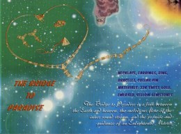

Le Pont menant au Paradis Le Pont menant au Paradis est un lien entre la Terre et le Paradis, le courant mélodieux du courant du son intérieur, la promesse et la guidance d'un Maître illuminé.
Collier, bracelet, boucles d'oreilles, bague et épingle pour col
En or suisse 22 carats, émeraudes, pierres précieuses jaunes
